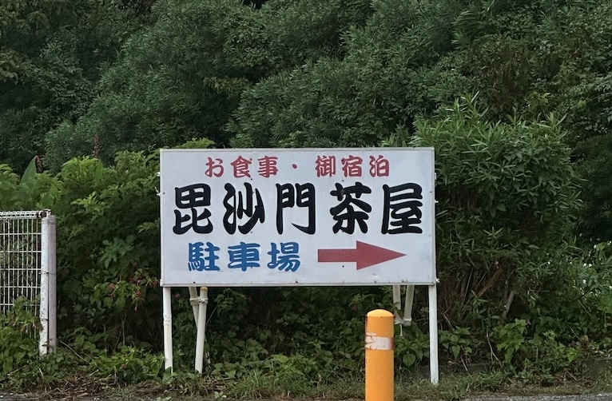
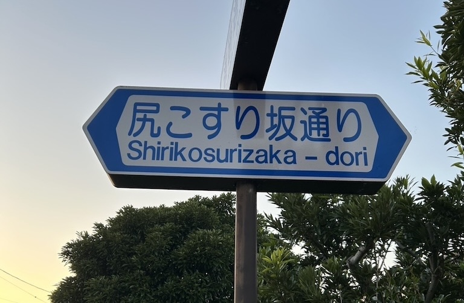
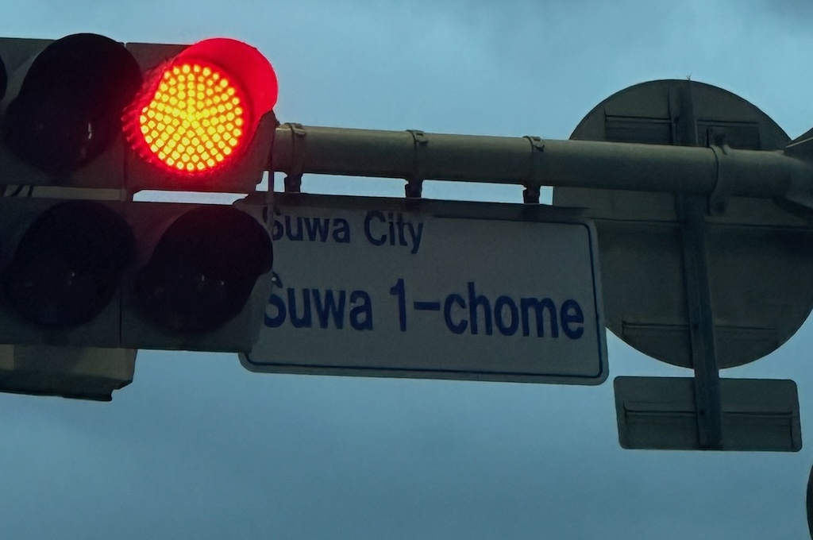

撮影場所・・・神奈川県 三浦市
撮影日時・・・10月5日
この課題を行うためにあてもなく車を走らせていた際に目に留まった看板。
デザインは至って普通であるが、「毘沙門」という文字のインパクトに惹かれた。
どうやらこの看板を見た地域が、三浦市毘沙門という地名らしい。

撮影場所・・・神奈川県 横須賀市 野比
撮影日時・・・10月12日
今週も車を走らせ、信号待ちをしていた時に見つけた標識である。
「尻こすり坂通り」近所すぎて何も感じていなかったが、よくよく考えてみると面白い地名だなと感じた。
由来を調べてみたところ、「荷車を押して下るときに、坂が急なため荷車の後部を擦ったことに由来している」
とのことであった。まさにその名の通りであった。

撮影場所・・・長野県
撮影日時・・・10月19日
今週は旅行で長野に行った際に見つけた看板の画像である。
ぱっと見普通の看板であるがよく考えると、英語表記のみの看板をあまり見たことがないような気がした。
観光地であるということから、海外からの旅行者が多いことが理由であると自分は考えた。
何か違和感を覚えたのは、日本語が表記されていなかったからである。